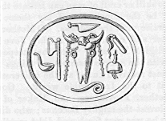

Julian the Apostate, " Julian the Emperor" (1888). Oration upon the Mother of the Gods.
MUST we then speak of this subject also: and shall we write concerning things that are not to be told, and shall we publish things not to be divulged, and secrets not to be spoken aloud? Who indeed is Attis or Gallos; who the Mother of the Gods; what is the reason of this rule of Chastity; moreover for what cause has such an institution been established among us from remote antiquity; handed down to us indeed from the most ancient of the Phrygians, but accepted in the first place by the Greeks ---- and those not the vulgar herd, but the Athenians ---- taught by the event that they had not done well in ridiculing him that was performing the rites of the Great Mother. For they are said to have insulted and driven off the Gallos, as one who was making innovations in religion: because they did not understand the character of the goddess, or how that she was the very "Deo," "Rhea," and "Demeter" so much honoured amongst them themselves.
Then followed vengeance on the part of the goddess, and then a remedy for that vengeance. For she that was directress unto the Greeks in all good things (namely, the prophetess of the Delphic god) ordered them to propitiate the anger of the Great Mother; and hence was |255 erected by the Athenians the Temple "of the Mother," wherein were kept all the public documents. After the Greeks, the Romans also received her; the Pythia having advised them, in their turn, to bring the goddess out of Phrygia for their helper in the war against the Carthaginians. And here there is nothing to prevent me from relating a little history. These most religious inhabitants of Rome, on the receipt of the oracle, send off an embassy to beg of the kings of Pergamus, who at that time were masters of Phrygia, and from the Phrygians themselves, the most holy statue of the goddess. They received and carried away the sacred burthen, having embarked it in a large merchant-ship, competent to traverse such mighty seas. Having crossed the Aegean and Ionian Seas, and sailed round the Sicilian and the Tyrrhene, she finally entered the mouth of the Tiber. The people streamed out of the city, together with the Senate: before them all, however, advanced to receive her the priests and priestesses, arrayed after the manner of the country, with their attention fixed upon the vessel which was coming in under full sail. They gazed at the surging of the waves as they divided themselves around the keel; and as she sailed up they welcomed her, each one kissing his hand to her, as they happened to be standing in front, from a distance. But the ship, as though desirous to prove to the people of Rome that it was not a mere lifeless wooden image 2 she was bringing them from Phrygia, but that, whatever it was she was bringing them from the Phrygians, it must possess some greater and supernatural virtue of its own, as soon as the goddess touched the Tiber she made the ship stand still, as though it had suddenly taken root in the bed of the river. They towed her against the stream----she did not follow: they waded into the shallows, and endeavoured to shove off the ship---- |256 she did not yield for all their pushing: next every possible resource was tried----she none the less remained immovable. For this cause a dire and unjust suspicion was cast upon the virtue of the Virgin who was invested with the highest sacerdotal rank, and they accused Clodia (such was the name of the reverend Vestal) of not keeping herself entirely unpolluted and pure in honour of the goddess, and therefore the latter was perhaps incensed, and took her vengeance: for all thought the event to be something supernatural. The Vestal, at first, was filled with shame at the rumour, and at the suspicion; so far removed was she from the forbidden and disgraceful fact: but when she perceived the slander against herself was spreading, and every moment gaining strength, she took off her girdle, and fastening it about the figure-head of the ship, as if by a sudden inspiration she ordered the crowd to fall back, and besought the goddess not to suffer her to be without cause exposed to such accusations. Then shouting, they say, like the sailors' cry: "Mistress and Mother," she exclaimed, "if I am chaste, follow me:" and forthwith she not merely stirred the ship, but towed it after her for a considerable distance against the current. And hereby the goddess, I ween, showed unto the Romans that the freight they were bringing from Phrygia was one worth no small price, but rather worth all they had to give: not a thing human, but a thing divine: not mere soulless earth, but something possessed of life, and out of nature. Such a manifestation, therefore, of her power did the goddess make before our people: she proved also another thing, that neither the virtue nor the vice of a single one of the citizens could escape her scrutiny. The war immediately prospered with the Romans against the Carthaginians, in such sort that their third war was merely for the walls of Carthage.
If this tale of the Vestal shall be thought by some incredible, and not suitable for either a philosopher or a theologian, let it none the less be recounted, for it is |257 publicly recorded by very many historians, and its memory preserved in brazen statues in that most noble and religious 3 city, Rome. I am not indeed ignorant that certain over-wise people will call these legends "old wives' fables," and not worth listening to; but I think, for my part, that in such matters it is better to believe the testimony of nations than of those witty individuals, whose little soul is acute indeed, but has a clear insight into no one thing. As regards the theory that came into my mind lately, during the actual period wherein continence is enjoined, I am informed that Porphyry, too, has composed a philosophical treatise upon this very subject; but as I have not met with his book, I cannot tell whether he happens to agree in any way with my own explanation. For my part, by my unassisted judgment I understand by this "Gallos," or "Attis," the existence of the Generative and Formative Intelligence, which generates all things down to the very furthest limits of Matter, and which contains in itself all the reasons and causes of material species. For the species of all are not contained in all; nor are those of the farthest off and the last of all, beyond which no more exists, contained in the Causes that be highest (final) and first, or where the name of "Deprivation " is applied with the sense of "Absence of Form." Now since there are many Existences, and very many Creators, the nature of that Creator who possesses the remote reasons, and the continuous efficient causes of material species, the nature, that is to say, of the superabundance of generative faculty,4 which is the lowest placed, and which extends as far as our earth from the stars above---- |258 this Nature is the Attis we are seeking for. It is, however, necessary to make a clearer definition of what I am advancing. I lay it down that there is Matter, and also there are Material Species, but unless a Final Cause for them be previously assumed, we shall be, without perceiving it, introducing the doctrine of Epicurus: since if nothing be anterior to two efficient causes, a spontaneous flux and chance must have united the two together. But we see (remarks some quick-witted Peripatetician, like Xenagoras) that the cause of these things is the "Fifth 5 and Revolving Body:" Aristotle, also, has made himself ridiculous by his inquiry and idle curiosity in this subject, and Theophrastus has followed his example, for he did not understand his own language. For after he had got as far as the Incorporeal and Intelligible existence he stopped short, not investigating that existence, but defining in what way these things came to exist; whereas he ought, I fancy, to have assumed their coming into existence in the same way as he did in the case of the "Fifth Body," and not sought after the causes, and to have stopped at this point, without flying off into the Ideal----a thing which has no natural existence of itself, but rests upon bare mental conception. To this effect I remember having heard Xenarchus lecture, but whether he was correct or not in so speaking must be left to the most high flying |259 Peripateticians to discover, but that he (Aristotle) does not speak in every way to my satisfaction is quite clear, inasmuch as I do not accept even the hypotheses of Aristotle unless they be brought into conformity with the doctrine of Plato; and, still more, the present subject must be reconciled with the revelations given to us from the mouth of the gods. One question, however, is worth asking; In what way can the Revolving Body contain the incorporeal causes of the immaterial species? for that without these Causes it is not possible that generation can subsist is, I suppose, self-evident and certain. To what purpose, pray, exist all these things that be born? Whence come male and female? Whence the difference in kind of all things that be, amongst visible species, unless there be certain pre-existing and previously established Reasons and Causes subsisting beforehand, in the nature of a pattern? With regard to which, though we are dull of sight, yet let us strive to clear away the mist from the eyes of the soul. The proper mode of clearing them is to turn into oneself, and to contemplate how the soul, and the mind imprisoned in Matter, are, as it were, the impression in wax and the image of things Immaterial. For this one thing 6 is not of the number of bodies, nor of the things that exist and are contemplated, incorporeally in connection with our bodies, the conception of which the soul is unable to receive independently of the body: a thing that it (the soul) would never have done, did it not possess in its nature some certain relationship with things incorporeal. This is Aristotle's meaning when he called the soul the "Type of species, though not in activity, yet in potentiality" That a soul thus constituted, and one turned inwards upon the body, contains these qualities in potentiality, is a necessary consequence; and if this soul be unconfined and without mixture, as it were, it cannot upset the argument, but must be supposed in all respects to be in activity. |260 Let us consider the point more intelligibly, through the medium of an example which, Plato has used in his "Sophist," although applied there to a different subject. The example I do not intend adducing for a proof of my argument, for it ought not to be taken as a proof, but only as an illustration; since it is about the First Causes, or those at least which are of the same rank with the First, that is, if our Attis be (as there is good reason to think) of divine nature. But what, and what sort of thing is your example? Plato remarks somewhere in his discussion upon "Imitation," that "if one should try to imitate in such a way as to reproduce the thing imitated, the task is full of labour and difficult----nay, of a truth almost an aiming at what is impossible; whereas that of imitating reality by means of appearance is pleasant, easy, and very possible. When, therefore, we take a mirror and carry it round, we easily take the impression of real objects, and show the figures of each of them." From this example let us transfer the comparison to the subject under discussion, so that the mirror may stand for what is termed by Aristotle the "Place of Forms in potentiality" for the real forms. But these forms themselves must necessarily exist in activity before existing in potentiality, and consequently prior to our soul (which is the opinion of Aristotle) that contains these forms in potentiality. Where, therefore, are we to place these things that exist first of all in activity? Must we place them in things united with Matter? No, for these are evidently the latest in rank. The only alternative left us, is to look for the immaterial causes in activity, previously established, of things material, prior to which our soul has existed, and together with which it has emanated from its source, and out of which it receives (as do mirrors from real objects), as a necessary consequence, the reasons of Forms, and communicates them through the agency of its nature unto Matter, as well as to the material bodies. Now that Nature is the maker of these bodies, we all know, |261 inasmuch as she is, as it were, the entire Nature of the universe; that she is also the maker of each individual part is, I fancy, self-evident and certain. But Nature in activity is distinct from Imagination (fantasi/a) in us, whilst the soul, which is superior to her, has received the property of Imagination. If, then, it is allowed that Nature possesses the cause of the things whereof she does not possess the conception, why in God's Name shall we not allow the same to hold good, and in a still higher degree, in the case of the soul, where we already know by means of imagination, and discover by means of the reason? For who is there so fond of cavilling as to allow that Nature possesses the material reasons (if not all alike in activity) at least all in potentiality, and yet refuse the same to the soul? If, therefore, Forms exist in Nature in potentiality, but not in activity, they certainly do exist in the Soul potentially in a purer and more distinct manner, so as to be comprehended and be known, although by no means in activity. To what shall we fasten the cables of this continuous generation? Where shall we mentally fix 7 our reasonings concerning the eternal duration of the world? The circulating Body 8 is certainly made up out |262 of subject and form. This is a necessary consequence unless these two exist in activity, separate from each other; but, by thought at least, all the former must be regarded as existing the first,9 and as the more ancient. Since, therefore, a certain Cause is allowed to have preceded material forms, being itself entirely immaterial, under the "Third Creator" (who 10 is to us father and lord, not of these objects only, but also of the Visible and Fifth Body), so we separate from the former [the Third Creator] Attis as the Cause that descends as far as the region of Matter, and we regard this Attis as the generative Power and the Gallos at one and the same time----him who, as Fable tells, was exposed by the side of the streams of the river Gallos, and there grew up, and afterwards, when he had got tall and handsome, became the favourite of the Mother of the Gods, and she committed to his care all other things, and placed upon his head the star-bespangled cap. Now if the head of Attis be covered by this visible heaven,11 ought we not perchance to interpret the river Gallos as signifying the span of the Milky Way, for at that point, it is said, that the body which is susceptible of passion mixes with the impassive circular orbit of the Fifth Body? As far as this limit truly hath the Mother of the Gods allowed this minion of her's to leap about and dance----namely, he that resembles the sunbeams,12 this intelligible Power, Attis. And when the same is |263 arrived at the extremity of his limits, he is said in the fable to have descended into the Cave,13 and conversed with the nymph, symbolizing the duplicity of Matter, and it is not Matter itself that is here meant, but the ultimate Cause of things incorporeal, which also existed before Matter. Moreover, it is asserted by Heraclitus: "Death unto souls is but a change to liquid."14 This Attis, therefore, the intelligible Power, the holder together of things material below the Moon, having intercourse with the pre-ordained Cause of Matter, holds intercourse therewith, not as a male with a female, but as though flowing into it, since he is the same with it.
Who then is the Mother of the Gods? She is the Source of the Intelligible and Creative Powers, which direct the visible ones; she that gave birth to and copulated with the mighty Jupiter: she that exists as a great goddess next to the Great One, and in union with the Great Creator; she that is dispenser of all life; cause of all birth; most easily accomplishing all that is made; generating without passion; creating all that exists in concert with the Father; herself a virgin, without mother, sharing the throne of Jupiter, the mother in very truth of all the gods; for by receiving within herself the causes of all the intelligible deities that be above the world, she became the source to things the objects of intellect. Now this goddess, who is also the same as Providence, was seized with a love without passion for Attis. And according to her will and pleasure made not only material things, but in a still higher degree the causes of the same. Now the fable relates how that the Virginity, |264 which preserves that things that be born and those that die, became enamoured of the creative and generative cause of these things, and commanded it to conceive, in preference, within the intelligible world, and to turn itself towards her, and to consort with her; that she made an injunction it should do so with none of the other Powers; whereby it should at once preserve the unity of form that conduces to preservation, and escape all tendency towards Matter; also she commanded this Cause to look up to herself (because she is the source of the creative Powers), without being drawn down or seduced into generation. For in this way the great Attis would become more powerfully creative, inasmuch as in every case the aiming at the better is more effective than the declination towards the worse. For in fact the Fifth Body is more creative through the former, than through the latter tendency,15 and likewise more divine in consequence of its directing itself towards the gods; since the body, even though it were composed of the purest tether, no one would presume to say was superior to the soul that was both un-defiled and pure, such as was the soul of Hercules, which emanated from the Creator. And yet this soul was more effective when she had given it to a body. For unto this very Hercules the superintendence of things below had been rendered more easy now that he is returned entire to his entire Father, than was it of old time when he wore flesh and lived amongst men. Thus in all cases the going away towards the better is more productive of effect than the turning towards the worse. And this the legend aims at teaching when it makes the Mother of the Gods enjoin upon Attis to be her servant, and not to stray from her, and not fall in love with another woman. But he went forward, and descended as far as the boundaries of Matter. But when it became necessary for this |265 ignorance 16 to cease and be stopped----then Corybas,17 the mighty Sun, the colleague of the Mother of the Gods (he that creates, and contrives all things beforehand, in unison with her, and who does nothing without her), persuades the lion to turn informer. Who then is this lion? We hear him styled "blazing"----he must, therefore, I think, be the cause presiding over the hot and fiery element; that which was about to wage war against the Nymph, and to make her jealous of her intercourse with Attis; and who this Nymph is we have already stated.18 This lion, the fable tells, lent his aid to the Mother of the Gods, that is, to the creative Providence of things that be; and by his detecting the offence and turning informer, became the author of the castration of the youth. Now this "castration" signifies a check to ignorance;19 for the business of generation stood still in the ordained forms, being checked by the creative Providence of the universe, not without the intervention of the fabled madness of Attis; which madness, running wild and overleaping all bound, and therefore deprivative of all strength, and not possible to be kept under command, was a thing which it is not unreasonable to suppose is due to the Final Cause of the gods. Contemplate and consider the Fifth Body----how it remains |266 free from change during every change, in the case of the illuminations of the moon; in order that finally the world so constantly renewed, and continually destroyed, may be near to the Fifth Body. With regard to her 20 illuminations we observe the occurrence of a certain change, and particular effects taking place simultaneously. It is not therefore unreasonable to suppose this Attis a sixper-natural personage (in fact the fable implies as much), or rather in all respects, a deity, seeing that he comes forth out of the Third Creator, and returns again after his castration, to the Mother of the Gods, after he has persuaded himself to incline completely 21 towards him, although he seemed at first to have a tendency towards Matter. One will not be wrong in taking him for the last of the gods, although the foremost of all things not human. For this reason the fable styles him a "demi-god," in order to express the difference between him and the unchangeable deities. The Corybantes, who are assigned by the Great Mother to act as his bodyguard, are the three primal Substances 22 of the superior kinds, that come next to the gods. He also rules over the lions, which together with their chief, Leo (the Zodiacal Sign), having a hot and fiery nature allotted to them, are the causes of the element Fire in the first instance, and by means of the heat resulting therefrom, are the authors of the Exciting Energy, and also of preservation to all the rest. He is crowned with the heavens instead of a tiara, coming forth as he does, so to speak, from thence unto us. This great god of ours is Attis; this is the meaning of the "Flight of King Attis" that we have just been lamenting; his "Concealments," his "Vanishings," his "Descents into the Cave." Let my evidence be the time of year when all these |267 ceremonies take place; for it is said that the Sacred Tree 23 is cut down at the moment when the Sun arrives at the extreme point of the equinoctial arc: next in order follows the Sounding of the trumpets, and lastly is cut down the sacred and ineffable Harvest of the god Gallos: after these come, as they say, the Hilaria and festivities. Now that a "cessation of Indefinity"24 is meant by the castration so much talked of by the vulgar, is self-evident from the fact that when the Sun touches the equinoctial circle, where that which is most definite is placed (for equality is definite, but inequality indefinite and inexplicable); at that very moment (according to the report), the Sacred Tree is cut down; then come the other rites in their order; whereof some are done in compliance with rules that be holy and not to be divulged; others for reasons allowable to be discussed. The "Cutting of the Tree;" this part refers to the legend about the Gallos, and has nothing to do with the rites which it accompanies; for the gods have thereby, I fancy, taught us symbolically that we ought to pluck what is most beautiful on earth, namely virtue joined with piety, and offer the same unto the goddess, for a token of good government here below. For the Tree springs up out of the earth and aspires upwards into the air; it is likewise beautiful to see and be seen, and to afford us shade in hot weather; and furthermore to produce, and regale us with its fruit; thus a large share of a generous nature resides in it. The rite, therefore, enjoins upon us who are celestial by our nature, but who have been carried down to earth, to reap virtue joined with piety from our conduct upon earth, and to aspire upwards unto the deity, the primal source of being and the fount of life. Then immediately after the cutting does the trumpet give out the invocation to Attis and |268 to those that be of heaven, whence we took our flight, and fell down to earth. And after this, when King Attis checks the Indefinity by the means of castration, the gods thereby warn us to extirpate in ourselves all incontinence, and to imitate the example,25 and to run upwards unto the Definite, and the Uniform, and if it be possible, to the One itself; which being accomplished the "Hilaria" must by all means follow. For what could be more contented, what more hilarious than the soul that has escaped from uncertainty, and generation, and the tumult that reigns therein, and hastens upwards to the gods? Of whose number was this Attis, whom the Mother of the Gods would not suffer to advance farther than was proper for him, but turned him towards herself, and enjoined him to check all indefinity.
And let nobody suppose me to say that all these things were done and happened formerly without the gods themselves knowing what they meant to do; or as though they were chastising their own faults. The causes of things that be, the ancients (whether with the gods to guide them, or discovering them by their unassisted efforts, but better to say seeking them out under the guidance of the gods), when they had discovered them, wrapped up the same in strange fables, in order that the fiction, being detected through its own extravagance and obscurity, might 'draw us on to the investigation of the Truth. For the vulgar, incapable of reasoning, derive sufficient benefit from what is conveyed by means of symbols; whilst to those of superior intellect, the truth respecting the gods will then only be serviceable, when they through diligent research shall find it out and lay hold thereof: whilst they are reminded by means of dark legends that it is their duty to inquire; and that they may advance to the end, as to the summit of the thing, after they have discerned it by means of such research; not so much out of |269 respect and confidence in the judgment of others, as in the exertion of one's own understanding upon other objects. What then do we assert as the fact----to consider it, as it were, in a summary? That as far as the Fifth Body, not merely the Intelligible, but also the Visible bodies, because they belong to the impassive and divine part, the ancients believed to be gods free from all mixture: whilst through the generative activity of the gods simultaneously existing in this same region of the universe, Matter had emanated in company with these gods from all eternity. Whilst out of these gods, and through their agency (on account of the superabundance of their generative and creative faculty), the Providence of things that be, uniting itself from all eternity with the gods, became at once Colleague of the Mighty Jupiter, and Source of the Intelligible Powers; whilst what appears without life, without generative power----the refuse, and what one may call the off-scouring, dregs, and sediment of things that be----(was made) by means of the lowest in order of all the gods, that is to say, by him in whom the beings of all the gods terminate; and this maker has regulated, corrected, and; changed the same for the better. For this Attis wears the star-spangled tiara----evidently meaning that he has. ordered the visible limits of the influence of all the gods upon the Sensible world, to be the beginnings of his own kingdom. Above him was the Unmixed and Pure, extending as far upwards as the Milky Way; but round about this place (where the passive element mingles with the impassive, and Matter exists simultaneously from that same source) his intercourse with the latter is symbolized by his "Descent into the Cave": a descent not indeed made against the will of the gods and of the Mother of them all, although said to have been made against their will. For the gods being by nature in superior place, the Better Part seeks not to drag them down from thence to this condition, but rather by means of the united descending of the Better Part, to draw the latter up to the |270 superior, and what is more acceptable to the gods, the limit already mentioned. In this sense the Great Mother is described as not hating Attis after his castration; nay more, she is described as no longer wrath with him: she was wrath with him on account of the descent into the Cave, because he, being a god and superior, had given himself up to his inferior: and after he had of his own accord checked the progress of his straying out of bounds, and had reduced to order this disorder by means of his subjection to the same influences with the equinoctial circle (in order that the mighty Sun may govern that which is most perfect in measure in his appointed course),26 then does the Goddess gladly recall him to herself, or rather retains him by her side. And there never was a time when these things followed another order than they do now: ever is Attis minister and charioteer to the Great Mother; ever does he stimulate generation; perpetually does he cut away from himself all extravagance 27 (want of limitation) by means of the ordained Cause of Forms. And returning, as it were, out of the bowels of the earth, he is said to sway his ancestral sceptre: although never deposed therefrom, nor to be deposed; yet, as the legend goes, deposed on account of his intercourse with the passive element. One point, however, is perhaps worth discussion: how it is that, the Equinox being double, Attis has preferred that which falls in Scorpio's Claws to that falling in Aries. The reason for this preference is plain enough in my opinion. For at what time the Sun is |271 beginning to approach us from the equinoctial line, and the length of day is on the increase----this season was, I think, considered the most suitable to the subject; for besides the reason which asserts that light is the accompaniment of the gods,28 they believed (the ancients) that the attractive rays of the Sun were favourable to all those who aimed at being released from the trammels of generation. Consider the matter by the light of experience: the Sun draws up all things out of the earth, he calls up to himself and causes them to spring aloft by means of his stimulating and wondrous heat, penetrating all bodies with the extremest subtilty; whilst the objects that naturally have a downward tendency he renders light. And such facts as these we ought, I think, to take for illustrations of his invisible operations; for he that forces such results in bodies by means of his corporeal heat, cannot but by means of the invisible, entirely spontaneous, divine and pure activity existing in his beams, draw up and attract to himself the blessed souls. When therefore he has displayed this light, so congenial to the gods, and to men desirous of ascending unto him, and whilst this light is on the increase, so that the day shall be longer than the night, and the Sovereign Sun is beginning to traverse the Sign of the Ram, at that time the attractive nature of the rays of this deity is manifested both by their visible operation and their invisible, whereby innumerable souls are drawn upwards, following the guidance of the most luminous and most sun-like of all the senses. For this ocular sense Plato hath extolled as not so much pleasant and useful for the purposes of daily life, as it is a guide in the acquisition of wisdom in a higher point of view. But if I should touch upon that unspeakable mystic science which the Chaldaean hath uttered through inspiration, concerning the "god of the seven rays"29 making souls ascend |272 through him, I shall be speaking of things unknown; yea, altogether unknown to the vulgar, yet familiar unto the blessed ministers of the gods, wherefore I shall now pass it over in silence.
But to return to what I was saying, namely, that we must suppose the season for the festival was fixed by those of old time not without consideration, but rather with plausible, in the highest degree, and well grounded reasons, a proof of this is that the goddess in question has the equinoctial line assigned to her. For under the Sign Libra the solemn and ineffable mysteries are celebrated in honour of Ceres and her daughter, and with good cause is this done, for it was fitting that they should be held a second time in honour of the god (Sun) as he is leaving us, in order that we may suffer nothing unpleasant from that goddess and dark Power 30 which then gets the upper hand. At any rate, the Athenians celebrate the Mysteries to Ceres twice a year; in the Sign Aries they celebrate, it is said, the Lesser Mysteries; the greater they hold when the Sun is in the Claws of Scorpio; for the reasons already stated. I believe them to be called "Greater" and "Lesser" Mysteries, for other reasons, but particularly as is probable for this, their being held when the Sun is receding, rather than when he is approaching us; wherefore in the latter case they are done merely as a reminder; because the preserving and sublimating deity is still present, the preliminaries of the Initiation are marked out; then, shortly after, continuous practices of religion, and purifications connected with the rites; and when the deity later is taking his departure for the zone opposite to our land, then, the crowning rite of the ceremonies is performed for the sake of our protection and preservation. |273 And observe how in this case also the final cause of generation is cut away, for amongst the Athenians also those that handle the holy things are strictly continent; and the Hierophant who presides over them shuns all generation, inasmuch as he has nothing to do with progression into indefinity, but on the contrary, is concerned with the Essence that is definite, that abides for ever, and is comprehended in the One, the which also is free from admixture, and pure. On this subject, thus much is sufficient. It now remains for us in continuation to discuss this observance of strict continence and of purity in order that we may extract them from whatever bears upon our hypothesis. And at first starting, this thing appears to everybody an absurdity, that the sacred rule allows one to touch flesh, and prohibits one's touching seeds. Are not the latter without life, the former possessing life? Are not the latter clean, the former filled with blood and much that is disagreeable both to the sight and to the hearing? Whilst the former possess the additional recommendation that no one is aggrieved by the eating of them, whereas in the other case there is the slaughtering and throat-cutting of the beasts, which feel pain in consequence, as is natural, and make a roaring noise. Thus much many superior souls may possibly say; what follows, even the most impious of mankind nowadays ridicule, namely, that the stalks of vegetables are eaten; but their roots, for example turnips, are refused; that figs are allowed to be eaten, but pomegranates by no means, and apples, besides. This I have frequently heard many people whining at; and though I have said it already, I consider myself especially indebted to all the gods together, and more than all to the Great Mother in this particular instance (as in all others) that she did not suffer me to wander about, as it were in the dark, but firstly commanded me to cut away, not as regards my body, but as regards the irrational appetites and motions of the soul, all that was superfluous and empty, by the aid of the Cause, the object of intellect, and which |274 presides over souls, whilst she herself enabled me to conceive certain notions perhaps not discordant with a true, and at the same time, reverential understanding of divine matters. But I seem to be running around in a circle, as though I had nothing that I could say. It is in my power, even by giving particulars, to adduce clear and convincing reasons why it is not allowable for us to bring to table those vegetables and fruits, which are prohibited by the sacred rule; and this I will do a little further on. At present, it is better to produce some types, as it were, and models; by following which, even though in my haste something may be left unnoticed, we may be enabled to form some judgment on these points. This is the proper place to recapitulate; first of all, whom I have stated Attis to be, and what is the meaning of his castration; what is symbolized by the things done between the castration and the Hilaria, and what the object of the observation of continence. Now, this Attiis has been defined by me as an Existing Cause, and a deity proximately creating the.material world; who, when he descends as far as the extreme limits, is checked by the Sun in his generative motion; when the latter Power arrives at the sharply defined circumference of the universe, the name whereof is the Equinoctial line by reason of its effect. His castration, we have explained to mean the checking of straying beyond bounds ----the which can only be brought about by his recall and reascension to the more ancient and original Causes. Of the continence itself, the aim we say is the reascent of the soul; therefore, in the first place, it forbids the eating of the plants that sink below the ground, forasmuch as the Earth is the lowest of things that be; for thither Plato also says that evil things return after having been driven away; and the gods also by their oracles in many places have called it the "refuse;" and frequently exhort us to make our escape therefrom. First of all, therefore, the life-giving and provident goddess doth not allow us even as far as concerns our bodily nourishment, to make use of things |275 that descend beneath the earth; thereby warning us to look up to heaven, or rather above the heavens. Some persons, it is true, eat one sort of seed, namely, kidney beans; because they look upon them as not so much seeds as green vegetables, on account of their growing in an upward direction and erect, and not being at all rooted under the earth; for the bean is rooted from the haulm, in the same way as the fruit of an ivy or of a vine hangs from the tree. This is the reason why it is forbidden us to use the seed of plants, whilst it is allowed us to use fruits and green vegetables, not such, however, as creep along the ground, but those that raise themselves aloft in air. In this way she commands us to reject as earthy the ground-loving nature of the turnip, whilst she allows us to bring to table that which grows upwards and aspires on high; inasmuch as this very action is the mark of purity. At any rate she allows us to use the stalks of vegetables, whilst she forbids their roots, most especially those that grow under, and are affected by the same influences as the ground. And truly the apples of trees, as being holy and goldlike, and the images of the mystic prizes,31 and of those given in the ceremonies, she permits us not to destroy nor to consume; seeing that they deserve, for the sake of the things they symbolize, to be respected and taken care of; but pomegranates she has rejected as being an earthy shrub; and the fruit of the palm tree, some one perhaps will say, in consequence of its not growing in Phrygia, where the religion was first established. It seems however to me that it was as a tree sacred to the Sun, and not subject to decay that she forbids us to consume it, during the fasts, for the nourishment of the body. In addition to the foregoing rules, she forbids us to use every sort of fish; and this question concerns us in common with the Egyptians. For my part |276 I think that for two reasons we should abstain from fish, ----best entirely; or, at any rate, during the time of fasting; and firstly because we ought not to eat of things the which it is not lawful to sacrifice unto the gods,32 and here perhaps some dainty and gluttonous persons may raise objection, as I remember to have been often served before on different occasions when they heard me explaining for what reason we do not offer sacrifice of fish to the gods. But in reality we have something to say in reply to this objection; for we do offer them up, I replied, in the sacrifices of Initiation, in the same way as the Romans to the horse; and many other beasts and living things, for example the dog to Hecate (like the Greeks and the Romans also); and there are many similar victims belonging to initiatory rites amongst other nations, offered by the community either once or twice a year; although not in the honorary sacrifices of which alone it is lawful for the gods to partake and banquet upon. Now fishes we do not offer up in the honorary sacrifices, because they are things that we do not pasture, nor do we take care of their breeding; neither have we herds of fish in the same way as we have of sheep and of oxen. For these latter animals, being fed and made to multiply through our care, may justly be applied to our other uses, and above everything else, to the purpose of the most honorific sacrifices. This is one reason why I think we are not allowed to use fish for food during the times of fasting. There is yet another, and which I fancy is more consonant with what has been already said----namely, that fishes from their habit of sinking to the bottom, are more of an earthy nature than seeds-themselves; whilst he that desires to soar upwards, and to fly aloft above the air unto the very pinnacles of heaven, will with good cause reject all things of the kind; he will emulate and run after those that aspire upwards into air, |277 that aim at ascension, and to speak poetically, that gaze at heaven. Birds, our religion allows us to eat, with the exception of a few that are held sacred by the common consent of mankind; and also the usual quadrupeds, except the swine; the latter as being earthy in all respects, in form, in habits, in the very article of its nature, (for it is full of superfluity, and bloated in body) is justly proscribed from the holy table. For this beast is believed to be an acceptable offering to the infernal gods, and not without good reason, for it is without sight of heaven, not merely never attempting, but even naturally made incapable of looking upwards. Such are the reasons that the holy institution assigns for abstinence from the things whence we are bound to abstain; and which we, who understand them, communicate to those who believe in the gods.
But as regards what we are permitted to eat, I make this observation. The holy rule does not allow all indiscriminately, but keeping in view what is within the power of human nature, allows us to make use of these common things, not in order that we should all of us necessarily consume all such things (for this perhaps were no easy matter), but that, firstly, each might use whatever his own constitution should permit: secondly, a larger supply for human wants is the consequence of such variety; and, thirdly, it is attended by the exercise of will,33 which last it is right to strain to the utmost in matters of religion, so as to be zealous and to exert one's self, even beyond one's strength to follow the divine rules. Such conduct is the more serviceable to the soul as regards its health, supposing that one makes greater account of it, and not of the health of the body. Nay, as regards the body, it will ultimately prove to have participated unconsciously in this more estimable and still greater benefit. For when |278 the soul gives itself up completely to the gods, committing all that concerns itself entirely to its superiors, whilst purity of life is the consequence, and previous to this the divine rules lead the way where is nothing further that confines or trammels it; for all things are in the power of the gods, and all things subsist around the gods,34 and all things are full of the gods; thereupon does the divine light illumine their souls, and being themselves rendered divine, they impart a tension and a strength to the spirit,35 to which they are united at birth, whilst the latter, being thus sharpened and at the same time governed by the soul, becomes the source of health to the whole body. That probably all bodily diseases, or at any rate the greater number and the worst, arise from the upsetting and depravation of the animal spirits, as I fancy none of the sons of Esculapius will deny, for some say this of all diseases, others of the most numerous, the worst, and the most difficult to cure. Testimony to this fact are the oracles of the gods; I mean that not only the soul, but the body likewise, is rendered worthy of much benefit and health by means of this purity of living. For, as they say, "The mortal envelope of bitter Matter is likewise preserved," as the gods promise in encouragement to the extremely pure amongst their own ministers.
What subject then remains for us to handle----especially when we are confined within the short space of a single night, and have read nothing beforehand, or made any research into these matters, nay, without any previous intention of writing about them, before asking for these tablets; the goddess will bear witness to what I say. But as I was |279 saying, what else is left for us to do, save to commemorate the goddess conjointly with Athene and Bacchus ----the festivals of whom, in truth, the law has fixed during the time of this fast, perceiving doubtless the relationship that exists between Athene and the Mother of the Gods, because of the provident nature common to both, having also an eye to the separate creative operation of Bacchus, which power the mighty Bacchus has received from the mighty Jupiter, inasmuch as he has emanated out of him, and has communicated the same to all the visible creation, while he directs and governs the universal separate creation. It is also fitting to make mention of Hermes, entitled "Epaphroditus "----for so the god is styled by those initiated persons, who profess to kindle torches in honour of Attis "the Wise." But who is so thick-headed as not to understand that through Hermes and Aphrodite are invoked all things in all places that contain the cause 36 of the universality and various forms of generation, which is the proper subject of my argument? Is not this the Attis, who at first is called insane, and then sane, in consequence of his castration? Insane because he chose for himself the realm of Matter, and superintends the work of generation; but sane because he hath modelled this refuse into Beauty, and hath wrought therein so great a transformation, that no skill or craft of man can imitate the same. But what shall be the conclusion of my theme? Verily a Hymn of praise unto the goddess. O Mother of gods and men, assister and colleague of mighty Jove! O source of the Intelligible Powers! Thou that keepest thy course in unison with the simple essences of things intelligible; thou that hast received out of all the universal Cause, and impartest it to the Intelligible world! Goddess, giver of life, Mother, Providence, and Maker of our souls! Thou that lovest the mighty Bacchus; who didst preserve Attis when he was cast forth, and didst recall him to |280 thyself after he had sunk down into the cave of the earth; thou that art the beginning of all Good unto the Intelligible Powers, and that fillest the world with all the objects of Sense, and grantest all good things, in all places, unto mankind! Grant unto all men happiness, of which the sum and substance is the knowledge of the gods; and to the Roman people universally, first and foremost to wash away from themselves the stain of atheism,37 and in addition to this, grant them propitious Fortune, that shall assist them in governing the empire for many thousands of years to come! To myself grant for the fruit of my devotion to thee----Truth in belief concerning the gods, the attainment of perfection in religious rites, and in all the undertakings which we attempt as regards warlike or military 38 measures, valour coupled with good luck, and the termination of my life to be without pain, and happy in the good hope of a departure for your abodes!

[Footnotes have been renumbered and moved to the end]
1. 1 Written at Pessinus, in a single night (says Libanius), in the winter before his expedition into Persia (which also appears from Julian's own asseveration at p. 278), A.D. 362-3.
2. 1 A remark worthy of notice, for her famous idol at Pessinus was a shapeless black stone, doubtless an aerolite.
3. 1 A remark showing that the old religion was still in the ascendant there.
4. 2 A fundamental principle of this philosophy, repeatedly insisted upon in the "Hymn to the Sun," is that the Natural Powers, Qeoi\, are continually replenished with their proper forces from some supreme fount, and the surplus of such force is expended by them in the creation and maintenance of material species.
5. 1 Aristotle's pempth_ o)usi/a, afterwards so famous as the "Quintessence," the Fifth Element, superior to all the rest. But the best definition is Plutarch's (De Ei Delphico, cap. x.):---- [Greek]. This Attis of the Mysteries seems to have the same origin with the Metatron of the Kabbala, the only-begotten son of the Tetragrammaton, who, like a wheel, ophan, is continually descending and ascending, bringing down lights from the Father, and carrying up to Him the good deeds of His people. At any rate, the Ophites (says Hippolytus) discerned in Attis, "almond-branch," the "wheatear cutoff," the express type of the Saviour.
6. 1 This impression, or image, of the immaterial world.
7. 1 An allusion to the do_j pou~ stw~ of Archimedes.
8. 2 Aristotle makes the Universe to consist of seven concentric spheres, each governed by a spirit of its own; whilst God eternally revolves in external space, and perpetually keeps up the existence of the whole ("Metaphysics," book x.). From Aristotle Dante derived the term ("Paradiso," viii. 126):----
"La Circular Natura che e suggello
Alia cera mortal, fa ben sua arte,
Ma non distingue l'un dall' altro ostello.
Quinci addivien ch' Esau si diparte
Per seme da Iacob; e vien Quirino
Da si vil padre che si rende a Marte.
Natura generata il suo cammino
Simil farebbe sempre ai generanti,
Se non vincesse il provveder divino."
9. 1 As being the first to exist.
10. 2 This notion is not to be found either in Plato or Aristotle, but comes from Iamblichus, who makes trei=j Dhmiourgoi\ connected with the three species of Being----the Intelligible, the Intellectual, the Cosmic. The "Third Creator," therefore, is the one that comes more immediately into contact with Matter, and produces the universe.
11. 3 As symbolized by his starry cap, a proof of the identity of Atti with Deus Lunus.
12. 4 An evident allusion to an explanation in the Phrygian Mysteries that made the mad dances of the Galli symbolize the play of the sunbeams.
13. 1 According to the legend, Attis having vowed perpetual chastity in honour of Cybele, was afterwards seduced by a certain nymph, and being punished with madness for thus breaking his vow, castrated himself in a fit of frenzy.
14. 2 This notion plays a great part in the system of the Naaseni (Ophites), who identified their serpent, Naas, with the element, Water.
15. 1 To look up towards the Mother of the Gods.
16. 1 a0peiri/a used here as signifying a "going out of bounds," as if derived from pe/raj. It is the "Indefiniteness" used by Plato to denote imperfection.
17. 2 Here we find the true origin of the Ophite Triad, composed of the Spiritual Man (Adam Kadmon), Ennoi/a, and the Spirit; out of which proceeds the Christ, who corresponds to the Attis in his operations.
18. 3 He makes her play the same part that Matter does in all the Gnostic theories. Thus in the "Pistis-Sophia," the main plot turns upon the seduction of the Aeon so named, and her entanglement in the sticky abyss of Matter.
19. 4 Or "the going out of bounds," the double meaning of the word (somewhat forcibly obtained, 'tis true), which affords foundation for this esoteric doctrine, cannot be preserved in the translation. Plato himself is the author of this play upon the words. "Indefinite," is a good equivalent for a)peiri/a proposed by Dr. Jackson.
20. 1 Probably referring to the identity of Attis with Dens Lunus.
21. 2 That is, "to be completely reconciled to the Third Creator."
22. 3 The elements Air, Water, Earth; Fire being mentioned in the next sentence.
23. 1 An almond-tree----Valentinus had before interpreted all these rites as prefiguring the history of Christ.
24. 2 Or "a stop to straying."
25. 1 tou_j h(mw~n in text, is clearly a corruption of to_ shmei=on.
26. 1 In reference to the explanation above given of the reason for holding the festival of Attis at the time of the equinox.
27. 2 "Extravagance," taken in its primary sense, expresses the meaning Julian extracts out of a)peiri/a more exactly than "ignorance." The aim of all this high-flying argument seems to be to show that Attis symbolizes the Creative Energy (the Gnostic Demeurgus) that at first wasted itself in illimitable Space, but finally ceased from such extravagance, and confined its operations within the forms or types appointed by the Supreme Being.
28. 1 The h(lugh_ attending upon the manifestation of a deity----"rosea cervice refulsit."
29. 2 The number of rays in the crown of Serapis----the e9ptagra&mmatoj Qeo_j. One account of the introduction of the Serapis-worship into Alexandria makes it brought from Babylon; and in fact Plutarch, in describing the last days of Alexander, calls the Temple of Belus that of Serapis.
30. 1 Evidently an allusion to Ahrimanes, the Power of Darkness.
31. 1 The regular shape of the prize-vases, ex. gr., those figured on the imperial copper of Byzantium, is that of a pomegranate.
32. 1 This may have been the very reason why the Christians allowed fish to be eaten during their own fasts, out of the spirit of contrariety.
33. 1 This permitted variety of diet, affording occasion for the exercise of "meritorious self-denial" in abstaining even from lawful enjoyment.
34. 1 The gods are centres about which all things turn.
35. 2 Julian here uses fu&xh and pneu~ma exactly in the sense of the Latin "animus" and "anima." But in the regular Neo-Platonism the nou~j takes the place of his first, and holds the same relation to the fu&xh that the latter holds to the body. This is fully and curiously set forth by Plutarch in his "Face in the Moon."
36. 1 E)xonta to_ e1neka ta~ panth~ ka&i pantw_j.
37. 1 By the complete eradication of Christianity, the denial of his gods.
38. 2 A hint of some important reforms he was contemplating in the constitution of the army, which was kept secret until the successful termination of the Persian War should enable him to carry it out, in defiance of all opposition from the officials interested in the existing corruption.
This text was transcribed by Roger Pearse, Ipswich, UK, 2003. All material on this page is in the public domain - copy freely.
Greek text is rendered using the Scholars Press SPIonic font, free from here.
| Early Church Fathers - Additional Texts |